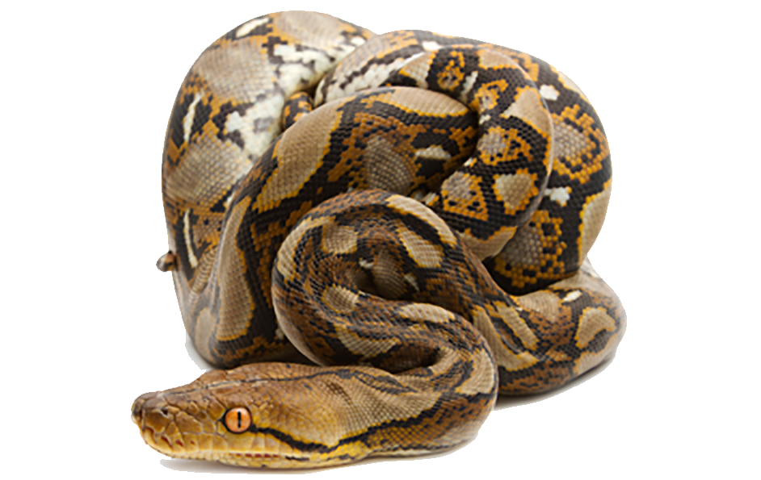

class: center, middle, inverse, title-slide # Fazendo amizade com a Phyton reticulada ## Introdução ao uso de Python e R no RStudio com o pacote reticulate ### Beatriz Milz  <img src="img/reticulated_python.png" alt="Python Reticulada" style="float:left;height:200px;"> ### <a href="https://2021.pythonbrasil.org.br/">Python Brasil 2021</a> ### Outubro de 2021 --- class: middle <style type="text/css"> /* custom.css */ .left-code { color: #777; width: 38%; height: 92%; float: left; } .right-plot { width: 60%; float: right; padding-left: 1%; } a, a > code { text-decoration: underline; } </style> <div> <style type="text/css">.xaringan-extra-logo { width: 110px; height: 128px; z-index: 0; background-image: url(img/logo-python.png); background-size: contain; background-repeat: no-repeat; position: absolute; top:1em;right:1em; } </style> <script>(function () { let tries = 0 function addLogo () { if (typeof slideshow === 'undefined') { tries += 1 if (tries < 10) { setTimeout(addLogo, 100) } } else { document.querySelectorAll('.remark-slide-content:not(.hide-logo)') .forEach(function (slide) { const logo = document.createElement('a') logo.classList = 'xaringan-extra-logo' logo.href = 'https://2021.pythonbrasil.org.br/' slide.appendChild(logo) }) } } document.addEventListener('DOMContentLoaded', addLogo) })()</script> </div> .pull-left[ ## Beatriz Milz - 2019 - * - Doutoranda em Ciência Ambiental - PROCAM/IEE/USP - 2016-2018 - Mestrado em Ciências - Programa de Pós-Graduação em Análise Ambiental Integrada - UNIFESP - 2012-2015 - Bacharelado em Gestão Ambiental - EACH/USP ] .pull-right[ <br> <center> <img src="https://avatars.githubusercontent.com/u/42153618?v=4" alt="Avatar" style="border-radius: 50%; max-width: 50%; "></center> ] ??? Essa palestra tem como objetivo apresentar um conteúdo introdutório e será mostrada na IDE RStudio, usando arquivos RMarkdown. Primeiramente farei uma abertura e falarei um pouco sobre mim e qual a minha atuação na comunidade (máx 5 min); depois a ideia é falar um pouco do contexto que surgiu a ideia da palestra, uma história de como decidi usar o RStudio para aprender programar em Python (máx 10 min); farei então uma introdução ao pacote reticulate, e apresentar algumas funções importantes, como: criar ambientes virtuais, instalar pacotes, checar se algum pacote está instalado, etc (10 min). Depois falarei sobre um pacote maravilhoso que funciona bem com reticulate e Python para criar vários produtos que podem ser disponibilizados na internet: o R Markdown (10 min). O tempo restante será para perguntas e interação com as pessoas participantes. Não usarei live-coding, pretendo criar slides com o pacote xaringan (em R) e adicionar os códigos e print screens da IDE nos slides. --- ### R: Comunidades, eventos, pacotes, livros.. <center> <a href='https://education.rstudio.com/trainers/'> <img src='img/Hex/CertifiedRstudioTrainer.png' width="150px"></a> <a href='https://rladies.org/'> <img src='img/Hex/1hexlogorladies.jpeg' width="150px"></a> <a href='https://curso-r.com/'> <img src="img/Hex/curso-r-azul.jpg" width="150px"></a> <a href='https://livro.curso-r.com/'> <img src='https://curso-r.com/images/produtos/hex-livro.png' width="150px"></a> <a href='https://saopaulo2019.satrdays.org/'> <img src='img/Hex/2satrdaysp.png' width="150px"></a> <a href='https://latin-r.com/'> <img src='img/Hex/4LatinR_hex_violeta-cut.jpg' width="150px"></a> <a href='https://carpentries.org/'> <img src='img/Hex/carpentries.png' width="150px"></a> <a href='https://user2021.r-project.org/'> <img src='https://user2021.r-project.org/img/artwork/user-logo-color.png' width="150px"></a> <a href='https://cienciadedatos.github.io/dados/'> <img src='https://cienciadedatos.github.io/dados/reference/figures/dados-hex.png' width="150px"></a> <a href='https://beatrizmilz.github.io/mananciais/'> <img src='https://beatrizmilz.github.io/mananciais/reference/figures/hexlogo.png' width="150px"></a> </center> --- ## Alinhamentos de expectativas - Conteúdo introdutório! - Foco em análise de dados - Falaremos um pouco de R também! :) --- class: inverse, middle, center # Conceitos importates! ## Sobre R e a comunidade :) --- ## R .pull-left[ - Linguagem de programação de código aberto - Criada em 1993, no departamento de Estatística da Universidade de Auckland, Nova Zelândia. - A comunidade da linguagem R é muito presente! - Muito usada por pessoas da área estatística, em pesquisas científicas, para analisar dados, etc. - É mantido pela [R Foundation](https://www.r-project.org/foundation/), uma organização sem fins lucrativos. ] .pull-right[ <img src="img/r_logo.png" width="65%" style="display: block; margin: auto;" /> Descrição: Logo da linguagem de programação R. ] --- ## RStudio .pull-left[ - Mais conhecido pela IDE RStudio - É uma companhia criada em 2009 - Tem uma grande equipe de pessoas que trabalham no desenvolvimento de pacotes em R - Organizam a [RStudio Conference](https://www.rstudio.com/conference/) (em 2020 com mais de 2200 participantes) - É muito próxima da comunidade ] .pull-right[ <img src="img/rstudio.png" width="65%" style="display: block; margin: auto;" /> Descrição: Logo da RStudio. - É a empresa privada mais importante no contexto da linguagem de programação R do mundo (**minha opinião**) - [Saiba mais nesse link](https://www.rstudio.com/about/) ] --- class: middle ## Hadley Wickham .pull-left[ - Página pessoal: http://hadley.nz/ - Cientista chefe na [RStudio](https://www.rstudio.com/) - Criador do principal pacote de criar gráficos em R: [`{ggplot2}`](https://ggplot2.tidyverse.org/) e de muitos outros pacotes! - Livros importantes: - [R for Data Science](https://r4ds.had.co.nz/) - [versão em espanhol](https://es.r4ds.hadley.nz/) - [R packages](https://r-pkgs.org/) - Paper importante: 2014 sobre [Tidy Data](https://www.jstatsoft.org/article/view/v059i10) - Journal of Statistical Software ] .pull-right[ <img src="img/hadley-glamour.jpeg" width="65%" style="display: block; margin: auto;" /> Fonte: [Criado por Will Chase](https://twitter.com/W_R_Chase/status/1155212225621221376?s=20) ] --- ## Ciclo da ciência de dados <img src="img/environmental-data-science-r4ds-general.png" width="65%" style="display: block; margin: auto;" /> Fonte: Conceito do ciclo de ciência de dados apresentado por [Hadley Wickham no livro R for Data Science](https://r4ds.had.co.nz/introduction.html), ilustração por [Allison Horst](https://github.com/allisonhorst). --- ## Ciclo da ciência de dados <img src="img/ciclo-ciencia-de-dados.png" width="60%" style="display: block; margin: auto;" /> Fonte: Conceito do ciclo de ciência de dados apresentado por [Hadley Wickham no livro R for Data Science](https://r4ds.had.co.nz/introduction.html), figura elaborada pela equipe da [Curso-R](https://curso-r.com/). --- ## Tidyverse .pull-left[ <img src="img/tidyverse-logo.png" width="70%" style="display: block; margin: auto;" /> Fonte: logo do pacote [Tidyverse](https://www.tidyverse.org/). ] .pull-right[ <img src="img/tidyverse_celestial.png" width="80%" style="display: block; margin: auto;" /> Fonte: Ilustração por [Allison Horst](https://github.com/allisonhorst). ] --- ## Ciclo da ciência de dados com R <img src="img/ciclo-ciencia-de-dados-pacotes.png" width="60%" style="display: block; margin: auto;" /> Fonte: Conceito do ciclo de ciência de dados apresentado por [Hadley Wickham no livro R for Data Science](https://r4ds.had.co.nz/introduction.html), figura elaborada pela equipe da [Curso-R](https://curso-r.com/). --- class: inverse, middle, center # Contextualização --- class: center, middle <img src="img/gif-r-vs-python.gif" width="65%" style="display: block; margin: auto;" /> Descrição: Gif com duas crianças fazendo luta com sabre de luz, e a legenda diz "A guerra da ciência de dados: R versus Python" Fonte do gif: [esse post no Medium](https://medium.com/built-to-adapt/8-simple-guidelines-for-data-projects-859a1a738ffc) --- class: center, middle <img src="img/meme-yes-i-would.jpeg" width="50%" style="display: block; margin: auto;" /> Descrição: Meme do Willy Wonka sarcástico, e a legenda diz "Sim, eu adoraria ver outra comparação de R versus Python em ciência de dados" Fonte do meme: [esse link](https://makeameme.org/meme/yes-i-would-5b8a0bceb6) --- ## Não é uma batalha :) .pull-left[ > Tradução: Geralmente, muitas pessoas falam sobre R versus Python como se fosse uma guerra onde R ou Python fossem vencer. Eu acho que isso não é interessante pois não é realmente uma batalha. Essas coisas existem indepentendemente e são ambas incríveis de formas diferentes. <br> -- **Hadley Wickham** ] .pull-right[ <img src="img/hadley.jpeg" width="100%" style="display: block; margin: auto;" /> Descrição: Foto do Hadley Wickham Fonte: [Esse post no blog da RStudio](https://blog.rstudio.com/2019/12/17/r-vs-python-what-s-the-best-for-language-for-data-science/) ] --- class: middle ## > O foco do "R ou Python?" arrisca perder as vantagens que utilizar as duas linguagens pode trazer para cientistas de dados e times de ciência de dados. > -- Fonte: [Lou Bajuk, nesse post no blog da RStudio](https://blog.rstudio.com/2019/12/17/r-vs-python-what-s-the-best-for-language-for-data-science/) --- ## Exemplos muito legais! .pull-left[ ### R <img src="img/hex-rmarkdown.png" width="50%" /><img src="img/hex-shiny.jpeg" width="50%" /> - [R Markdown](https://rmarkdown.rstudio.com/) e [Shiny](https://shiny.rstudio.com/) ] .pull-right[ ### Python <img src="img/scrapy.png" width="45%" style="display: block; margin: auto;" /> - [Scrapy](https://scrapy.org/) ] ??? > voce pode falar bem de uma linguagem sem falar mal de outra :) jt --- class: inverse, middle, center # Pacote reticulate + IDE RStudio --- ## IDE RStudio: Uma casa única para R e Python <img src="img/rstudioandpython-15.png" width="70%" style="display: block; margin: auto;" /> [Fonte da imagem](https://blog.rstudio.com/2021/01/13/one-home-for-r-and-python/) --- ## Pacote Reticulate .pull-left[ - É um pacote criado e mantido pela [RStudio](https://www.rstudio.com/) - [Repositório no GitHub](https://github.com/rstudio/reticulate/) e [site do pacote](https://rstudio.github.io/reticulate/) - O pacote reticulate fornece um conjunto de ferramentas para interoperabilidade entre Python e R. ] .pull-right[ <img src="img/reticulated_python.png" width="100%" style="display: block; margin: auto;" /> ] --- ## Documentação O pacote reticulate inclui recursos para: - Chamar Python do R de várias maneiras, incluindo **R Markdown**, criação de scripts Python, importação de módulos Python e uso de Python interativamente em uma sessão R. - Tradução entre objetos R e Python (por exemplo, entre data frames R e Pandas, ou entre matrizes R e arrays do NumPy). - Vinculação flexível para diferentes versões do Python, incluindo ambientes virtuais e ambientes Conda. - Reticulate incorpora uma sessão Python em sua sessão R, permitindo interoperabilidade contínua e de alto desempenho. Se você é um desenvolvedor R que usa Python para alguns de seus trabalhos ou um membro da equipe de ciência de dados que usa ambas as linguagens, o reticulate pode agilizar drasticamente o seu fluxo de trabalho! Fonte: [Site do pacote](https://rstudio.github.io/reticulate/) --- class: inverse, middle, center # R Markdown --- ## Pacote R Markdown .pull-left[ - Criado e mantido pela [RStudio](https://rstudio.com/) - Princípio: arquivos onde escrevemos textos e marcamos com `markdown`, mas também podemos adicionar códigos que são executados. - Extensão `.Rmd` - Possibilita a utilização de códigos `R`, `Python`, `Markdown`, `HTML`, `CSS`, `SQL`, e outros em um único arquivo. - Ideia similar ao Jupiter Notebook. ] .pull-right[ <div class="figure" style="text-align: center"> <img src="img/hex-rmarkdown.png" alt="<center><b>Logo: <a href='https://rmarkdown.rstudio.com'>Pacote rmarkdown</a></b></center>" width="70%" /> <p class="caption"><center><b>Logo: <a href='https://rmarkdown.rstudio.com'>Pacote rmarkdown</a></b></center></p> </div> ] --- ## Pacote R Markdown - A reprodutibilidade é algo importante para o R Markdown. - A comunidade de R, e a equipe da RStudio, desenvolveram outros pacotes que integram bem com R Markdown para gerar diversos produtos de análise de dados diferentes, com arquivos .Rmd. ## Alguns exemplos: (apenas alguns mesmo pois tem muita coisa além disso!) --- ### Apresentações com o pacote [xaringan](https://slides.yihui.org/xaringan/) - Exemplo: Essa apresentação! [E muitas outras que fiz](https://beatrizmilz.com/talk/), como a [abaixo](https://beatrizmilz.github.io/slidesR/xaringan/09-2021-rday.html#1): <div class="shareagain" style="min-width:300px;margin:1em auto;max-width:70%;"> <iframe src="https://beatrizmilz.github.io/slidesR/xaringan/09-2021-rday.html#1" width="1600" height="900" style="border:2px solid currentColor;" loading="lazy" allowfullscreen></iframe> <script>fitvids('.shareagain', {players: 'iframe'});</script> </div> --- ### Livros com o pacote [bookdown](https://bookdown.org/home/) - Exemplo: [Livro Ciência de Dados em R](https://livro.curso-r.com/) da [Curso-R](https://curso-r.com/) <div class="shareagain" style="min-width:300px;margin:1em auto;max-width:70%;"> <iframe src="https://livro.curso-r.com/" width="1600" height="900" style="border:2px solid currentColor;" loading="lazy" allowfullscreen></iframe> <script>fitvids('.shareagain', {players: 'iframe'});</script> </div> --- ### Blogs com o pacote [blogdown](https://pkgs.rstudio.com/blogdown/) - Exemplo: [meu blog](https://beatrizmilz.com/blog/2021-python-serie/semana-1-parte-1/) <div class="shareagain" style="min-width:300px;margin:1em auto;max-width:70%;"> <iframe src="https://beatrizmilz.com/blog/2021-python-serie/semana-1-parte-1/" width="1600" height="900" style="border:2px solid currentColor;" loading="lazy" allowfullscreen></iframe> <script>fitvids('.shareagain', {players: 'iframe'});</script> </div> --- ### Blogs com o pacote [blogdown](https://pkgs.rstudio.com/blogdown/) - Exemplo: [blog da Curso-R](https://blog.curso-r.com/posts/2021-06-23-dnd/) <div class="shareagain" style="min-width:300px;margin:1em auto;max-width:70%;"> <iframe src="https://blog.curso-r.com/posts/2021-06-23-dnd/" width="1600" height="900" style="border:2px solid currentColor;" loading="lazy" allowfullscreen></iframe> <script>fitvids('.shareagain', {players: 'iframe'});</script> </div> --- ## Produtos em PDF com o pacote [pagedown](https://github.com/rstudio/pagedown) Exemplo: o [relatório](https://abjur.github.io/obsRJRJ/relatorio/obs_rjrj_abj.pdf) do [Observatório da insolvência: Rio de Janeiro](https://abj.org.br/cases/obsrjrj/), feito pela [ABJ](https://abj.org.br/) .footnote[ABJ: Associação Brasileira de Jurimetria] <div class="shareagain" style="min-width:300px;margin:1em auto;max-width:70%;"> <iframe src="https://abjur.github.io/obsRJRJ/relatorio/obs_rjrj_abj.pdf" width="1600" height="900" style="border:2px solid currentColor;" loading="lazy" allowfullscreen></iframe> <script>fitvids('.shareagain', {players: 'iframe'});</script> </div> --- class: inverse, middle, center ## Usando reticulate <img src="img/reticulated_python.png" width="50%" style="display: block; margin: auto;" /> --- ### Algumas configurações ```r # Código R # Carregar o pacote lubridate library(reticulate) # Instalar o python reticulate::install_python(version = "3.9.0") # > Installed Python-3.9.0 to /Users/beatrizmilz/.pyenv/versions/3.9.0 # > [1] "/Users/beatrizmilz/.pyenv/versions/3.9.0/bin/python3.9" ``` --- ### Ver as configurações utilizadas ```r reticulate::py_config() ``` ``` ## python: /Users/beatrizmilz/GitHub/python-brasil-2021-reticulate/bin/python ## libpython: /Library/Frameworks/Python.framework/Versions/3.9/lib/python3.9/config-3.9-darwin/libpython3.9.dylib ## pythonhome: /Users/beatrizmilz/GitHub/python-brasil-2021-reticulate:/Users/beatrizmilz/GitHub/python-brasil-2021-reticulate ## version: 3.9.4 (v3.9.4:1f2e3088f3, Apr 4 2021, 12:32:44) [Clang 6.0 (clang-600.0.57)] ## numpy: /Users/beatrizmilz/GitHub/python-brasil-2021-reticulate/lib/python3.9/site-packages/numpy ## numpy_version: 1.21.2 ## ## NOTE: Python version was forced by RETICULATE_PYTHON ``` --- ### Instalar bibliotecas ```r # Código R # Instalar o pandas reticulate::py_install("pandas") # Instalar o seaborn reticulate::py_install("seaborn") ``` --- .pull-left[ ## Como usar? - Campos de código, ou **chunks** ````markdown ```{r} # seu código em R aqui ``` ```` ````markdown ```{python} # seu código em python aqui ``` ```` ] .pull-right[ Ex: - Como é adicionado no arquivo `.Rmd`: ````markdown ```{python} "Olá," + "Mundo!" ``` ```` - Como aparecerá no arquivo final: ```python "Olá, " + "Mundo!" ``` ``` ## 'Olá, Mundo!' ``` ] --- class: middle, center, inverse ## Sessão compartilhada entre R e Python <br> *(shared session)* --- ### Exemplo de uso ```python # Código Python import pandas as pd lucro_pixar = pd.read_csv('dados/lucro_pixar.csv', sep = ';') lucro_pixar.info() ``` ``` ## <class 'pandas.core.frame.DataFrame'> ## RangeIndex: 24 entries, 0 to 23 ## Data columns (total 6 columns): ## # Column Non-Null Count Dtype ## --- ------ -------------- ----- ## 0 filme 24 non-null object ## 1 orcamento 23 non-null object ## 2 bilheteria_eua_canada 22 non-null float64 ## 3 bilheteria_outros_paises 23 non-null float64 ## 4 bilheteria_mundial 23 non-null float64 ## 5 lucro 23 non-null float64 ## dtypes: float64(4), object(2) ## memory usage: 1.2+ KB ``` ??? ## Criando um dataframe em R --- ### Criando um gráfico em Python - Claramente preciso aprimorar minhas habilidades com seaborn... ```python import seaborn as sns sns.barplot(x = "lucro", y = "filme", data = lucro_pixar) ``` <img src="index_files/figure-html/graficoPY-1.png" width="70%" style="display: block; margin: auto;" /> --- ### Criando um gráfico em R - Minhas habilidades são melhores com ggplot2 :D - Acessando o conteúdo em R: Em um chunk em R, podemos usar `py$` + o nome do objeto: `py$lucro_pixar` ```r library(tidyverse) py$lucro_pixar %>% tidyr::drop_na(lucro) %>% mutate(filme = forcats::fct_reorder(filme, lucro)) %>% ggplot() + geom_col(aes(x = lucro, y = filme, fill = lucro), show.legend = FALSE) + scale_x_continuous(labels = scales::dollar_format()) + scale_fill_viridis_c() + theme_light() + labs(x = "Lucro", y = "Filmes") ``` --- class: middle, center  --- ## Sessão compartilhada: resumo .pull-left[ ### R -> Py No R: ```r frase <- "R é legal!" ``` No Python: ```python "Python com " + r.frase ``` ``` ## 'Python com R é legal!' ``` ] .pull-right[ ### Py -> R No Python: ```python outra_frase = "Python é legal!" ``` No R: ```r paste("R com", py$outra_frase) ``` ``` ## [1] "R com Python é legal!" ``` ] --- ## Dicas gerais - Use sempre a versão mais recente do [R](https://cran.r-project.org/) e da [IDE RStudio](https://www.rstudio.com/products/rstudio/download/) - Use a versão do reticulate que está disponível no GitHub (versão em desenvolvimento): ```r devtools::install_github("rstudio/reticulate") ``` - Ao usar R Markdown, adicione a linha destacada abaixo: ```r * knitr::knit_engines$set(python = reticulate::eng_python) ``` - O RStudio ainda não oferece suporte para abrir arquivos `.ipynb` corretamente, porém existe uma função para converter arquivos `.ipynb` em `.Rmd`: [`rmarkdown::convert_ipynb()`](https://rmarkdown.rstudio.com/docs/reference/convert_ipynb.html) --- ## Links úteis e referências - [Cheatsheet do pacote reticulate](https://raw.githubusercontent.com/rstudio/cheatsheets/master/reticulate.pdf) - Texto em blog: [R vs. Python: What's the best language for Data Science?](https://blog.rstudio.com/2019/12/17/r-vs-python-what-s-the-best-for-language-for-data-science/) - [R and Python - RStudio](https://www.rstudio.com/solutions/r-and-python/) --- ## Agradecimentos - [Escola de Dados - Curso de Python para Inovação Cívica](https://escoladedados.org/courses/python-para-inovacao-civica/) - [Ana Dulce](https://twitter.com/4naDulceP) - Organizadora da Python Brasil - [Angélica Custódio](https://twitter.com/angcustodio) - [Julio Trecenti](https://linktr.ee/j.trecenti) - [Fernando Corrêa](https://twitter.com/Azeloc) - [Comunidade R-Ladies São Paulo](https://r-ladies-sao-paulo.github.io/RLadiesTheme/) - [Curso-R](https://curso-r.com/) --- class: center ## Muito obrigada! .pull-left[ <img src="https://media.giphy.com/media/M9NbzZjAcxq9jS9LZJ/giphy.gif" width="50%" style="display: block; margin: auto;" /> Slides criados usando os pacotes em R 📦 : [**xaringan**](https://github.com/yihui/xaringan)<br> [gadenbuie/xaringanthemer](https://github.com/gadenbuie/xaringanthemer) O chakra vem da biblioteca javascript [remark.js](https://remarkjs.com), e os pacotes [**knitr**](http://yihui.name/knitr), e [R Markdown](https://rmarkdown.rstudio.com). ] .pull-right[ <center> <img src="https://avatars.githubusercontent.com/u/42153618?v=4" alt="Avatar" style="border-radius: 50%; max-width: 50%; "></center> <i class="fas fa-home"></i> [beatrizmilz.com](https://beatrizmilz.com) <i class="fab fa-twitter"></i> [@BeaMilz](https://twitter.com/BeaMilz) <!-- <i class="far fa-envelope"></i> [milz.bea@gmail.com](mailto:milz.bea@gmail.com) --> ] <!-- inicio academic icons --> <link rel="stylesheet" href="https://cdn.jsdelivr.net/gh/jpswalsh/academicons@1/css/academicons.min.css"> <!-- final academic icons --> <!-- inicio font awesome --> <script src="https://kit.fontawesome.com/1f72d6921a.js" crossorigin="anonymous"></script> <!-- final font awesome -->